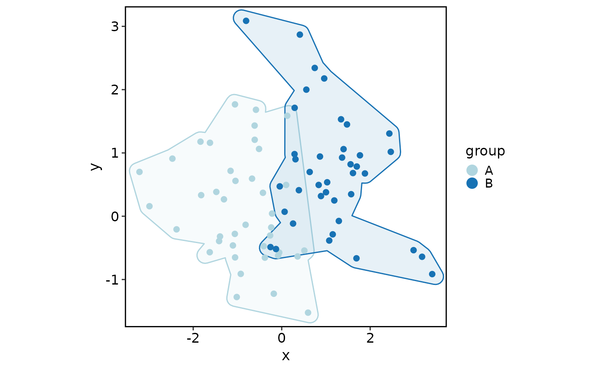
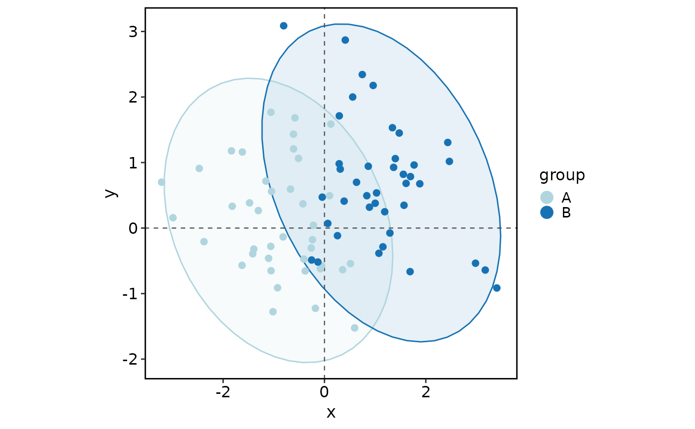

Visualize observations on precomputed two-dimensional coordinates.
Usage
DimDataPlot(
data,
x,
y,
group.by = NULL,
split.by = NULL,
shape.by = NULL,
show_na = FALSE,
palette = "Chinese",
palcolor = NULL,
NA_color = "grey80",
pt.size = 2,
pt.alpha = 1,
shape.values = NULL,
add_mark = FALSE,
mark_type = c("hull", "ellipse", "rect", "circle"),
mark_expand = grid::unit(3, "mm"),
mark_alpha = 0.1,
mark_linetype = 1,
label = FALSE,
label.size = 4,
label.fg = "black",
label.bg = "white",
label.bg.r = 0.1,
label_repel = FALSE,
label_repulsion = 20,
label_point_size = 1,
label_point_color = "black",
label_segment_color = "black",
add_origin = FALSE,
origin.color = "grey30",
origin.linetype = "dashed",
origin.linewidth = 0.4,
aspect.ratio = 1,
title = NULL,
subtitle = NULL,
xlab = NULL,
ylab = NULL,
legend.position = "right",
legend.direction = "vertical",
legend.title = NULL,
theme_use = "theme_this",
theme_args = list(),
seed = 11
)Arguments
- data
A data frame containing coordinates and optional grouping columns.
- x
Name of the column used as the x-axis coordinate.
- y
Name of the column used as the y-axis coordinate.
- group.by
Name of the column used to color observations. Default is
NULL.- split.by
Name of the column used to split the plot into facets. Default is
NULL.- shape.by
Name of the column used to map point shapes. Default is
NULL.- show_na
Whether to keep missing values in
group.by,split.by, orshape.byas an explicit"NA"level. Default isFALSE.- palette
Color palette name. Available palettes can be found in
show_palettes. Default is"Chinese".- palcolor
Custom colors used to create a color palette. Default is
NULL.- NA_color
Color used for missing values.
- pt.size
Point size.
- pt.alpha
Point transparency.
- shape.values
Point shapes used when
shape.byis set.- add_mark
Whether to add marks around groups. Default is
FALSE.- mark_type
Type of mark to add around groups. One of
"hull","ellipse","rect", or"circle". Default is"hull"."ellipse"usesggplot2::stat_ellipsewithtype = "norm"andlevel = 0.95; the other mark types use ggforce marks.- mark_expand
Expansion of the mark around each group. This is used for
"hull","rect", and"circle"marks. Default isgrid::unit(3, "mm").- mark_alpha
Transparency of the mark. Default is
0.1.- mark_linetype
Line type of the mark border. Default is
1.- label
Whether to label group centers.
- label.size
Size of labels.
- label.fg
Foreground color of labels.
- label.bg
Background color of labels.
- label.bg.r
Background ratio of labels.
- label_repel
Whether labels repel from their group centers.
- label_repulsion
Repulsion force for labels.
- label_point_size
Size of center points for repelled labels.
- label_point_color
Color of center points for repelled labels.
- label_segment_color
Color of label segments.
- add_origin
Whether to add dashed x = 0 and y = 0 reference lines.
- origin.color
Color of origin reference lines.
- origin.linetype
Line type of origin reference lines.
- origin.linewidth
Line width of origin reference lines.
- aspect.ratio
Aspect ratio passed to
theme().- title
Plot title.
- subtitle
Plot subtitle.
- xlab
Label for the x axis.
- ylab
Label for the y axis.
- legend.position
Position of the legend.
- legend.direction
Direction of the legend.
- legend.title
Title of the group legend.
- theme_use
Theme function applied to the plot.
- theme_args
A named list of arguments passed to
theme_use.- seed
Random seed.
Examples
set.seed(1)
plot_data <- data.frame(
x = c(rnorm(40, -1), rnorm(40, 1)),
y = c(rnorm(40, 0), rnorm(40, 1)),
group = rep(c("A", "B"), each = 40)
)
DimDataPlot(
plot_data,
x = "x",
y = "y",
group.by = "group",
add_mark = TRUE
)

DimDataPlot(
plot_data,
x = "x",
y = "y",
group.by = "group",
add_mark = TRUE,
add_origin = TRUE,
mark_type = "ellipse"
)

DimDataPlot(
plot_data,
x = "x",
y = "y",
group.by = "group",
add_mark = TRUE,
mark_type = "circle",
mark_alpha = 0.3,
mark_expand = grid::unit(1, "mm"),
mark_linetype = 2
)